"One country. One Voice"- Sri Lanka Telecom (SLT) connects all Sri Lankans seamlessly through world class telecommunication services empowering the citizens of the nation to unify in an era of accelerated development.
In line with the Government's vision of enabling all citizens with Information and Communications Technology (ICT), Sri Lanka Telecom's mission is to deliver innovative and exciting communications experiences to all Sri Lankans. As the nation's leading integrated communications, broadband and backbone infrastructure services provider, SLT is well positioned to be a partner in the growth of the country's economy as Sri Lanka gears up for a new era of infrastructure development.
SLT provides facilities and services in the areas of voice, data, video and mobile. Together with its subsidiaries, the Group provides these services to over six million customers including multinational corporations, large and small corporations, the public sector, retail and domestic customers.
The Company has been awarded a National Long Term Rating of AAA (lka) and a BB- rating on Long term Local Currency and Foreign Currency by Fitch Ratings, followed by B+ local currency and foreign currency credit ratings by Standard & Poor's.
The Sri Lankan economy achieved growth rates of above 8% for two consecutive years in 2010 and 2011. However the Central Bank has estimated that overall GDP growth slowed to 6.5% in 2012, following policies adopted to stabilise the economy in the face of a slow global recovery, rising domestic credit and adverse weather that affected output.
Inflation has been in single digits for over 47 months with year-on-year inflation at 9.2% and the annual average inflation at 7.6% as at December 2012. The Central Bank also reduced policy rates and allowed the credit ceiling to expire by end 2012 in order to provide some stimulus to the economy.
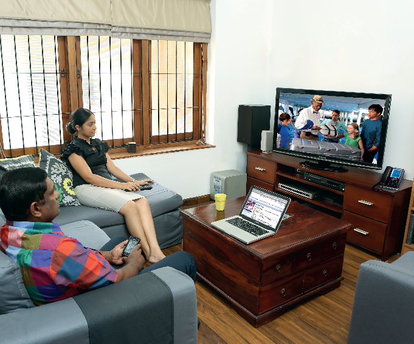The ultimate in technological convergence, Triple Play Megaline gives customers one line that offers three unique experiences: best-in-quality telephone, uninterrupted, high speed internet and personalised entertainment, in packages designed for home and office.
Mega infrastructure development projects have gained momentum with the transport network being expanded to include more highways and expressways and new ports and international airports being introduced as part of an accelerated development plan. The country greeted its millionth tourist in 2012 and is poised to meet a target of 2.5 million tourists by 2016. In this milieu, the demands on the Information and Communication Technology services sector in Sri Lanka are expanding.
Though Sri Lanka is classified as a developing nation, its adult literacy rate of 90 per cent and youth literacy rate of 98 per cent are on par with developed countries. The Government has recognised the importance of education and IT literacy and has undertaken initiatives to bring IT education to rural areas. However Sri Lanka is currently below the world average of fixed and mobile broadband penetration though national averages show a year on year increase. Below graph illustrates the national telephone density and the growth in the number of mobile and internet subscribers in Sri Lanka.
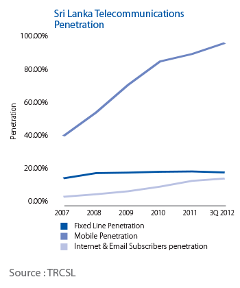Seven areas of strategic focuses have been defined at SLT, based on the four main strategic themes of Services, Operations, Network and Group Synergy.
Strategic themes for SLT are developed and reviewed considering the present and future business context. The Annual Business Plan (ABP) is therefore derived from the strategic themes of the Company after considering the business priorities during the respective year. Agreed targets and milestone of the Annual Business Plan are then communicated throughout the organisation using awareness programmes so that all staff are aware and held accountable at their respective levels. These organisational targets are translated in to respective operational targets at group, divisional and sectional levels where these targets are linked with the personal targets of all employees after they have proven an awareness of overall organisational objectives.
To ensure the achievement of business objectives, monitoring and rectifying mechanisms are established at each level through monthly progress meetings, investment governance board meetings, transformation programme review meetings and other operational review meetings. Performance evaluations of an individual's contribution to achieving organisational objectives are then measured against established criteria. The overall transformation model focuses on process, people and organisation in the business planning, delivering and performance monitoring for improved quality service.
Accountability and Performance Evaluation ProcessSLT produced several important business capabilities during 2012, following the vision of the business transformation programme. "Align Planning to Strategy" and "Manage Business Planning" are two of the capabilities relevant to the business planning and monitoring process that were updated.
"Align Planning to Strategy" capability is delivered with a long range strategic planning model that can be revised annually. Additionally it aligns all new investments to the Company's vision, mission, values and business objectives. Business processes were updated to link people and systems with the new business culture to deliver the values.
The "Manage Business Planning" capability is delivered by reviewing the annual business planning process considering the transformation capabilities to deliver a single plan for the entire Company. In addition, it provides a framework to determine the total annual capital investment of the Company. Alignment of new product plans with Company direction, change capacity planning, and project portfolio mapping processes are defined during capability development.
The coming years will see the Company focusing more on expanding the broadband footprint, upgrading the existing Megaline customers to double-play or triple-play, offering unmatched high speed internet and high quality entertainment services. Value-added services will bring in increased revenue to SLT while reducing the capital expenditure on network expansion.
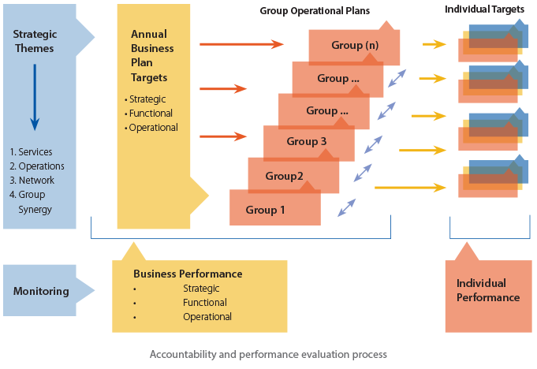Efficiency improvement initiatives are being undertaken to reduce operational expenditure while minimising below-the- line advertising to further reduce expenses on advertising and promotions. Furthermore, SLT has identified significant savings that can be made by replacing the legacy network elements with NGN elements. Recent initiatives such as implementing energy saving policies and increasing employee awareness will give us long term savings in energy consumption.
When introducing operational efficiencies that would increase revenue and decrease expenditure, SLT will ensure that these measures are taken in a manner in which customer services are not compromised. Service assurance and resolution of customer complaints will be enhanced through the newly introduced Network Operations Centre (NOC), Contact Centre and field staff integrated processes. Furthermore, SLT will expedite the efficiency that can be achieved by sharing resources, channels, space, etc., within the Group in order to provide customers with the best service possible.
SLT is a vital power behind connectivity in Sri Lanka, delivering faster access to information and communication in all the key economic sectors of the country. As Sri Lanka gears up to service millions of tourists, the tourism related sectors such as airport and aviation, leisure and transportation are expected to keep up with the service needs of its customers. The Banking and Finance sectors play a key role in the country's economy which relies heavily on advanced communications systems and sophisticated technology platforms. SLT is happy to become their communication backbone which facilitates all their business and banking transactions.
It is the future now and SLT is ready to lead the entire nation towards achieving prosperity. In 2010 and 2011 SLT completed the expansion of the fibre optic core network to the Northern peninsula and other areas, improving customer access to high performance broadband, empowering business expansion, enabling all telecommunications operators to expand their operations, enhancing quality, performance and capacity to meet all future ICT requirements of the Northern peninsula.
In 2012 SLT carried out a series of discussions with authorities pertaining to being granted the license to operate the Sri Lanka national ICT backbone. The Backbone would essentially enable all telecommunications operators to expand their operations, and introduce new facilities across the country. With this, all new development across the country would be linked, facilitating greater employment, economic growth, and new investment opportunities.
The network modernisation and transformation project, consisting of the Next Generation Network (NGN) and i-Sri Lanka programme, will provide a host of IP based value added features and ultra high speed broadband coverage for the existing network throughout the country. This will revolutionise users' broadband experience.
Currently, SLT provides internet services via its nation-wide fibre optic backbone network by using access technologies such as copper based PSTN (Megaline), CDMA (Citylink), Fibre- to-the-Cabinet/FTTC (i-Sri Lanka), Fibre-to-the-Building/FTTB (Metro Ethernet) and Corporate VPN (Intelligent Solutions).
The capital intensive expansion programme launched by SLT a decade ago has delivered the future now. The first phase of the ultra high speed Broadband Network under the nation-wide network modernisation project - "i-Sri Lanka" - has brought in an additional 57,000 broadband connections during the year.
The project which commenced in late 2010 is progressing well with enhancements and upgrades to the existing fixed network, by expanding it to bring it closer to customers through Fibre-to-the-Node (FTTN) deployment of Multi-Service Access Nodes (MSANs). These Nodes that are located within 2km from customers will reduce the length of the copper connections, thereby significantly increasing reliability, quality and broadband data speeds whilst reducing maintenance and replacement costs.
The i-Sri Lanka project which is fully integrated with the Company's Next Generation Network (NGN) modernisation project, has met its annual target of adding approximately 3,500km of fibre and by the end of 2012, had a total fibre network of 14,656km. The project will target a total capacity of over 600,000 broadband ports on its network by the end of 2013, and targets to achieve broadband speeds of up to 20Mbps for more than 90 percent of the existing one million customers by then.
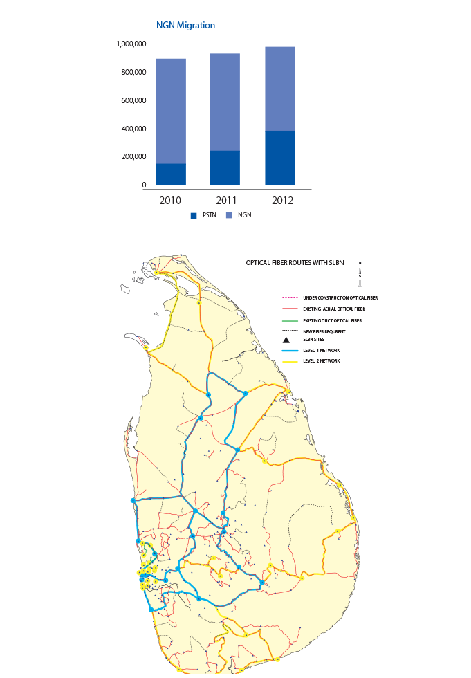During the year, SLT Megaline registered its one millionth fixed line household, which translates into over 4.5 million people across the island. The technological upgrades made all across the country will not only deliver enhanced broadband experience with double and triple play features available with SLT's Megaline (fixed lines) connections, the one million households will also be introduced to a world of entertainment options through PEO TV. With a growing customer base which was at 68,000 by end 2012, PEO TV added capacity to meet the demands of 90,000 customers, with further expansion planned for the coming year.
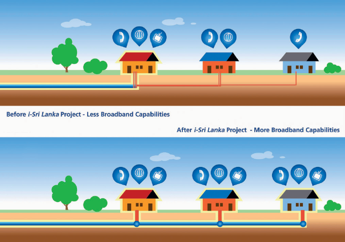SLT Metro Ethernet service is a state-of-the-art Ethernet network operated by SLT to deliver high bandwidth connectivity solutions for high-rise buildings, main corporate offices and important commercial buildings, and is based on the well-known Ethernet standard of Metro Ethernet Forum (MEF). SLT Metro Ethernet is ready to offer reliable services in the demanding arena of data communications with the ever- increasing need for enterprise connectivity. A new aggregation network was introduced for improved service availability. The Metro Ethernet Network (MEN) connects more than 330 important commercial locations in metro areas, including cities outside Colombo.
The second component of SLT's next generation network (NGN), which is a part of the network transformation programme, will enable enterprise customers to experience an array of product offerings in the Intelligent Solutions portfolio. These are exclusively offered to corporate customers comprising Managed, Networking, Hosting and Enterprise voice services.
In a world where almost all forms of communications are now in digitised mode, advancements in communication technology have enabled communication via email, social networks, cloud computing etc to take place across a myriad of laptops, smart phones, tablets and other smart devices, giving users access to real time data and information.
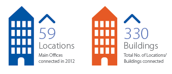SLT has understood the needs of the customer and is making cutting edge technology available now in order to enable its enterprise customers to compete in their respective industries. The Company is offering the enterprise customers with voice, networking, data hosting and managed services through the Intelligent Solutions portfolio.
The latest additions to the NGN architecture in 2012 helped enterprise customers make optimum use of their communication equipment both within and outside the organisation by replacing the traditional voice connections with Internet Protocol (IP) based product portfolios. The service which gives an organisation scalability and improved reach across multiple IP based infrastructures was made available using premium Virtual Private Network (VPN) for customers with high speed bandwidth requirements, and value VPN for customers with low speed bandwidth requirements.
During the year, SLT also successfully deployed IPv6, the world's latest IP version. The Company is the first Internet Service Provider (ISP) in Sri Lanka to have implemented its network transition towards an IPv6-ready platform. As a dominant player in the internet market, SLT is now able to provide fast access to information using VPN via its NGN architecture.
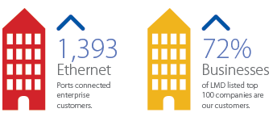2012 also saw SLT expand capacity in the internet data centre (iDC) to better serve enterprise customers by catering to their unique and diverse data hosting requirements whether it be shared, virtual or dedicated hosting. SLT iDC, offers affordability and simplicity coupled with high end features such as operating system, security, data transfer, data backup and storage.
SLT has been at the forefront of offering a wide array of managed services such as customer relationship management, human resource management, and project management amongst many others by way of using concepts such as cloud computing. In 2012, by allowing customers to select packages based on their business and budgetary requirements, SLT successfully increased its customer base that is now using the futuristic technology of cloud computing.
The past 4 years heralded changes at SLT with the Transformation Vision "To be a market driven, customer centric business" and Mission "To lead, define and execute a best practice approach for achieving the Transformation vision". The Company's values were to shape its behaviours and performance would be measured against these values on a qualitative basis.
The core values at SLT have driven the Company to transform itself from a Product/Network based organisation to a customer centric organisation; these values were "customers are at the centre of everything we do", "we are trustworthy", "we continuously invent new opportunities through creative thinking", "we are responsive", "we are one team working together to achieve a common goal", "we are committed to exceptional performance" and "we are dedicated to enhancing stakeholder value".
The core values at SLT have driven the Company to transform itself from a Product/Network based organisation to a customer centric organisation; these values were "customers are at the centre of everything we do", "we are trustworthy", "we continuously invent new opportunities through creative thinking", "we are responsive", "we are one team working together to achieve a common goal", "we are committed to exceptional performance" and "we are dedicated to enhancing stakeholder value".
SLT, through its business re-engineering process, identified many opportunities for controlling costs and introduced programmes that brought about total savings of Rs.100million to the Company.
Energy committees were formed during the year to study the costs associated with energy usage and to explore possibilities for reducing energy consumption. One initiative implemented during the year was the introduction of energy efficient LED lighting. With increasing energy tariffs, it was essential that SLT made a concrete effort to reduce its energy costs.
Energy savings and cost efficiencies are expected to continue with the Company migrating 500 exchanges into "softswitch" that are NGN capable. The reduction in space consumed for the operation and the resultant energy savings due to lower electricity consumption in terms of power supply for the operation, charging of the battery back-ups to operate the generators, as well as reduced fuel costs needed for the maintenance of the fuel tanks, are expected to bring in substantial cost savings.
The Company has also taken active measures to control costs in operational areas. Besides the many programmes implemented, introduction of an in-house vehicle repair and maintenance programme has also resulted in significant annual savings.
Understanding customer needs in order to fulfill customer requirements was yet another challenge faced by SLT. The year 2012 saw the introduction of a Customer Service Management (CSM) that fill the gap in the present order management system. Along with the system and processes in place, the Company went through a comprehensive training programme on customer service. Staff at each customer touch point had to attend the mandatory training. This programme will be extend to implement Customer Relationship Management (CRM) system in end of year 2013.
In addition, a one-of-a-kind SLT Technology Experience Centre was set up in 2012 at the Company's head office premises at Fort, Colombo to provide a dedicated location for the demonstration of its technologies and services to enterprise and SME customers. The centre allows customers to experience technologies and products that are available and also allows the Company to introduce innovative solutions whilst enhancing existing services, based on feedback received. The new Centre will also be used as a 'proof of concept' lab for systems integration solutions. Furthermore, it is also a place where focus group discussions and presentations can be conducted to target customers, thereby taking a step towards building long-standing relationships with potential and existing corporate customers.
In addition, a new teleshop was opened at the Fort CTO heritage building where customer experience is enhanced with additional features to provide a convenient "one- stop-shop" for our customers. The Teleshop provides the convenience of settling all SLT bills, obtaining any SLT service such as Megaline, Broadband internet, PEO TV, Citylink, internet and email services, and mobile services through Mobitel counters at the location. Further, the new teleshop will showcase the 'Experience Centre', to provide first-hand experience to customers on the products offered by SLT's high quality single play, double play and triple-play services. The SLT teleshop network is a key distribution channel for all SLT products and services including pre-paid and post- paid services and the purchase of new telecommunication equipment, as well as being a convenient channel for customers to make inquiries and complaints.
For the convenience of customers who are unable to access Teleshops, SLT launched a one of a kind "Mobile Experience Centre". Existing and potential customers are now able to walk in, interact with and experience firsthand the many services offered through this mobile experience centre that travels around the island. In addition to giving the masses the opportunity to experience for themselves the range of services offered by SLT, it also gives them the opportunity to speak with SLT representatives to gain further product knowledge and obtain clarification on any area related to SLT products and services. The SLT Mobile Experience Centre also has capability to access high speed broadband services and wireless capabilities on smart phones and tablets, allowing customers to experience 65 channels on PEO TV.
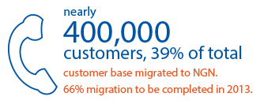SLT also took a step further in building a strong, mutually beneficial relationship with customers by organising 11 customer forums during the year 2012 covering all provinces of the island. The presence of senior management of the Company helped build the trust and confidence of the attendees, and allowed customers and the Company to exchange information and bring about increased levels of customer satisfaction by understanding their concerns, providing quick solutions to issues and shortcomings they faced and carrying out improvements they saw necessary to SLT services.
A long term need to handle one of the biggest challenges in the telecommunications industry – revenue leakage – was introduced in 2012. A Revenue Assurance System (RAS) along with best practices in revenue assurance was implemented with adequate training for staff with a view to increasing operational efficiencies. The revenue assurance system will not only be used as an auditing tool but also as a business intelligence reporting system to assist decision making.
The creation of the SLT Network Operating Centre (SLTNOC) has brought about operational efficiencies whilst enhancing service assurance and customer fulfillment by centralising services and functions. Island wide Operations and Maintenance Centres (OPMCs) ensures 24/7 end to end service manageability and delivery as well as post service assurance across the country. This also created a need for streamlining reporting structures, eliminating repetitive functions and introducing accounts and performance management systems. The employees involved were provided with extensive training as they needed to be educated on all vertical technological platforms, as the services require coordination between two or more platforms.
Furthermore, the Company believes that along with providing superior customer service, it also needs to provide a transparent and ethical process for customers to understand the "value for money" being provided. As such, the Company offers its internet users the "Broadband usage meter" facility which enables them to view their data usage and manage their budgets and data volumes each month.
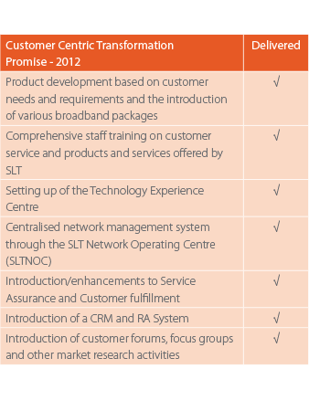
In 2012, SLT introduced "Brand Health track", a monthly study of consumer needs and preferences that is carried out by an external market research company. The information analysed from these reports as well as information gathered during customer forums, focus groups and feedback received from the Technology Experience Centre are utilised to improve and introduce product offerings. The newly introduced CRM system which captures data including complaints, compliments and preferences of customers are further analysed to assist in the research and development of new products and services.
SLT with its "customer first" approach, designed several broadband packages to suit the many lifestyles and needs of its customers, in an effort to make broadband affordable and accessible, connecting every home and bringing people online so that information and knowledge are easily shared. New packages with data volumes ranging from 2GB to 300GB per month were introduced, while the 'Rockets Speeds' campaign launched during the year promoted 9 high speed packages with speeds, ranging from 1Mbps to 16Mbps.
In keeping with the vision to provide affordable services for all, SLT in 2012 introduced night time broadband offers with free data volumes for the first time in Sri Lanka with additional free usage volumes from 1GB to 100GB based on the selected package. In order to fulfill a void in meeting customer needs, SLT added 'Bandwidth On Demand', which enables users to request additional volume with the same speed by calling the SLT Contact Centre through the newly introduced charge free hotline '1212', once threshold limits were reached.
SLT's expansion projects and enhanced access to broadband, also meant availability of PEOTV services to a broader customer base. Seven new channels were added during the year to enhance the local and international channel offerings. Video on Demand (VOD) grew to a total of 29 movies, 5 tele-dramas, 4 tele-films and 16 documentaries in 2012. Subscriber video on demand (SVOD) introduced "Cinemaworld on demand" which offers a collection of 30 international movies a month at a nominal monthly rental fee. The corporate business solutions targeting the tourism sector introduced a pilot project during the year and TV banking made the headlines in 2012 as a first in Sri Lanka. Together with Union Bank, SLT facilitates banking transactions via the telephone including fund transfers, utility bill payments, and balance inquiries, providing convenient access to banking from the customer's own home. PEOTV introduced a new package "Silver Plus" in 2012 to those customers who preferred an upgraded service.
"Abhimaana", a broadband package targeting public sector employees and pensioners brought in the highest ever sales from a broadband promotion.
The interactive voice recognition service available through SLT was promoted by conducting an island-wide competition of folksongs unique to Sri Lanka which attracted 40,000 songs, thereby helping to preserve the heritage of the country.
Many other promotions such as "fly with IDD" promoting International Direct Dial services, "Dial and win" cricket promotions, and many other seasonal promotions were, also offered during the year.
The efforts of SLT in enabling a "connected" society have contributed to the expansion of fixed broadband internet subscribers over the past few years. Furthermore, the 117km of optical fibre laid in 2011 along the Southern Expressway to facilitate the information superhighway for the Southern Province has significantly contributed towards revenue growth of the Company.
The SME customer base, the fastest growing segment of SLT, continued its positive trend and contributed to the Company's revenue significantly.
Year 2012 was one of achievements for SLT in providing superior technological services with unmatched customer service.
One achievement in the provision of extensive communications and technical solutions was when SLT powered the 2012 Global Symposium for Regulators (GSR-12) held in Colombo. The ITU's Global Symposium for Regulators (GSR) is the pre-eminent international event for the regulatory community around the world and SLT provided Wi-Fi facilities for conference locations, LAN for communication among ITU and conference officials and delegates, Multiple Internet Lines for high speed internet connectivity at 30Mbps bandwidth, and audio visual language interpretation supporting 6 different languages.
The SLT Contact Centre which was awarded the operations of the Call Centre for the Government Information Centre (GIC) in 2011 has been commended by the Presidential Secretariat for the successful handling of over 5,000 callers per day on the "1919" network. The GIC, established under the aegis of the Presidential Secretariat and the Information and Communication Technology Agency (ICTA) is the conduit which provides information to the general public pertaining to any service offered by the public sector. The number is also used as a facility to lodge complaints.
SLT is proud to report that after an assesment of SLT's performance during the first 2 years of operating the 1919 service and after a competitive tender process, the Government awarded SLT a further 2 year contract to operate this service from January 2013.
SLT achieved a milestone in providing "Intelligent Solutions" when SLT empowered ICC World Twenty20 2012 in Sri Lanka by providing dedicated internet through Ethernet connectivity, high speed Wi-Fi access and optical fibre connectivity to all venues across the country. By being the premier telecommunication services provider for the ICC T20 World Championship 2012, SLT showcased its capability to cater to mega events with a global outreach, where the delivery of consistent, high quality services is a must.
The requirements for the event in 2012 were significantly higher than those provided for the ICC World Cup held in 2011. The demand for high speed internet bandwidth in larger capacities and the need for Wi-Fi accessibility for the World Cup venues empowering ICC officials, photographers, journalists, broadcasters and the wide range of media personnel who cover the entire event with second by second updates were greater. Therefore, SLT invested heavily to extend the latest infrastructure to cover a larger area, with SLT personnel providing 24 x 7 assistance throughout the duration of the tournament.
Through the e-government initiative by the Government of Sri Lanka and ICT Agency, SLT provides the communication infrastructure to connect all the Government institutes to the Lanka Government Network (LGN), linking them to provide faster, streamlined services to the public. During the year SLT has already upgraded connectivity to higher bandwidth speeds for 240 locations out of a total of 465 connected locations island wide.
LEARN is the national research and education network of Sri Lanka that connects academic and research institutions in the country. SLT is proud to have provided this project with high bandwidth connectivity up to 10Mbps via IP-VPN links to the University Grants Commission (UGC) and 13 universities island wide. During the year, the Company upgraded LEARN with a dedicated Internet Leased Line of 264Mbps, upgraded 3 VPLS connections to universities and 5 new VPLS connections to 5 universities opening up new possibilities for Sri Lanka's researchers and academics.
The Company has also completed significant upgrades and introduced new services to meet the voice and data communication requirements of all state banks in the country during the year 2012.
During the year many of the foremost corporate entities in Sri Lanka engaged SLT to provide communications solutions such as data centre, backup, disaster recovery, managed, networking, hosting services and IP/VPN services.
Sri Lanka Telecom has the largest internet backbone with multiple access points to the Internet. Geographical coverage has been established by connecting to major POPs in North America, Europe, Far East Asia, South Asia and India to ensure high performance connectivity to the internet through multiple Tier 01 Global Internet Service Provider's Networks. Sri Lanka Telecom has taken steps to further strengthen its global presence by partnering with global IP network service providers during the year. As a result of these initiatives, SLT's global business capabilities have exceeded the boundaries of unparalleled global connectivity and SLT is in a position to offer reliable bandwidth solutions, thereby adding more value to its growing customer base in Sri Lanka.

global presence by partnering with global IP network service providers during the year. As a result of these initiatives, SLT's global business capabilities have exceeded the boundaries of unparalleled global connectivity and SLT is in a position to offer reliable bandwidth solutions, thereby adding more value to its growing customer base in Sri Lanka.
In line with this objective, strategic moves such as strengthening and expanding business relationships with global and regional operators and selling international bandwidth to facilitate their operations, are currently in play. This also includes providing world class international connectivity by utilising capacities of the Company's undersea cable system.
SLT has been aggressively pursuing new markets in the region with a technology strategy that fully supports it. Its global coverage has been significantly strengthened with the undersea optical fibre links: SEA-ME-WE 3, SEA-ME-WE 4, Bharat-Lanka submarine cable (between India and Sri Lanka) and Dhiraagu, the SLT submarine cable system between the Maldives islands and Sri Lanka. Sri Lanka's strategic location ensures that the country plays a crucial role in the process of unfolding new technologies across different regions.
Globalisation has brought the world closer together with customers being educated and informed of the availability of products and standards of services in other countries. The telecommunications industry will be faced with the challenge of having to deliver larger capacities at the lowest prices. With a saturated market where customer demands for services are ever increasing, all the operators are competing to provide attractive packages to customers. Efficient infrastructure will be the key to survival in the present day economic environment. SLT's network and operational transformation process aimed at bringing its network architecture to the next level of ICT will benefit our customers today and in the future.
Furthermore, as a developing country, SLT can realise economic benefits through reliable telecommunication infrastructure. Improved ICT infrastructure can encourage a smarter workforce and a well informed population through fast and simple access to information and services, which in turn helps fight poverty and enhances economic growth. SLT has been a proud partner in the journey of economic progress in the country and through advanced technologies, is helping Sri Lanka attain its economic development plans while bringing the future, now to its citizens.
Revenue at Group level reached Rs.56.77 billion, termed through 10% growth, primarily driven by mobile voice, broadband, wholesale and enterprise data. At Company level, SLT experienced a significant increase in revenue mainly driven by broadband, wholesale and enterprise data, and international revenue. SLT revenue has increased to Rs.34.72 billion in 2012 from Rs.32.29 billion in 2011, recording a growth of 8%, the highest revenue growth recorded since 2006. Subscriber numbers experienced an upward curve of 6% in wire line, while CDMA saw a decline of 4%. Non-traditional revenue lines including broadband, wholesale, enterprise data and PEO TV recorded significant growth levels.
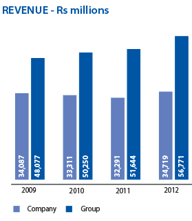Having worked on strategies of prudently managing expenditure in the past, this year too the process was continued with even more emphasis, placing it as a key priority across the Group. However, 2012 has been a challenging year for SLT Group with the increase in fuel prices and hike in energy costs which exerted excessive pressure on profitibility. Volume driven costs also contributed significantly in controlling operating expenses at Company level.
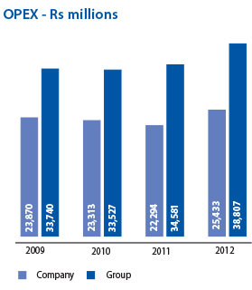There was a noteworthy increase in interest costs, mainly driven by an increased level of borrowings, which negatively impacted the bottom line results of the group as well as of the company.
The Group recorded a Profit Before Tax (PBT ) of Rs.5.97 billion and Profit for the year of Rs.4.04 billion, a decline of 3% and 10% respectively. Despite the gain on foreign exchange translation in the second half of the year due to the appreciation of the Rupee against the first half, cumulative translation loss on exchange for the full year has diluted the Group Profit before Tax (PBT ) and Profit for the year. At Company level, SLT posted PBT of Rs.4.68 billion, an increase of 4% and profit of Rs.3.36 billion, an increase of 1%.
Interest CoverGroup interest cover saw a decrease due to the increase in interest expenses. Interest cover decreased from 11.4 in 2011 to 6.8 in 2012 at the Group level, while at Company level, there was a substantial decline to 9.77 from 78.4 last year.
At Group level, gearing as at 31st December 2012 and 2011 was 0.25 and 0.22 respectively, while at Company level it stood at 0.12 in 2012 compared to 0.05 in 2011.
Total non-current assets of the Group increased to Rs.77.36 billion, as against Rs.70.71 billion from the previous year.
Group property, plant and equipment increased by Rs.6.01 billion from Rs.66.15 billion in 2011 to Rs.72.16 billion in 2012.
2011 and 2012 Financials are based on new Sri Lanka Accounting Standards applicable for the financial period beginning 1 January 2012.
MANAGEMENT DISCUSSION & ANALYSIS : MOBITEL (PRIVATE) LIMITED

The year 2012 though dotted with numerous changes and challenges saw us achieving exemplary growth rates: our subscriber base grew by 14% and our revenue by 13%. We achieved all this and more despite facing heavy competition amongst four international giants.
The past year 2012, marked a year of significant growth and expansion, with a strong commitment towards supporting the Nation's transformation strategy, focusing on taking ICT to the rural areas. We also proudly launched exciting new products and services, with new growth sectors earmarked; focusing on going beyond the customer's basic needs.
We also focused on re-inventing and improving our corporate culture, raising the bar to meet international standards. The 'CHANGE TO LEAD. NOW' organisational transformation campaign has led to integral cost saving, innovation and a crucial change in our work ethic.
While continuing to uplift lives, create new opportunities and develop Sri Lanka's ICT landscape, Mobitel looks towards 2013 with optimism, towards being the driving force of the ICT industry, contributing towards Sri Lanka becoming the 'Wonder of Asia'.
The macro challenges faced in the form of a depreciating rupee dominated the Sri Lankan financial trajectory in the early part of the year, giving disturbing signs to an imports dependent economy which was already trying to tackle high international oil and commodity prices. Adding to the dilemma, the sudden increases in energy costs that were persistent throughout the year also contributed towards a generally difficult year for the mobile telecommunication business. Notwithstanding the challenging conditions, investment in infrastructure development continued at the industry level. Mobitel leading the way, with good foresight, invested heavily in deriving a competitive advantage over industry players both systematically and in a timely manner, spanning all key areas of the organisation.
The telecom sector, one of Sri Lanka's most vibrant sectors, led the way in economic growth in recent years predominantly due to the vast potential unleashed in the mobile telecommunications subsector. Mobitel's consistent investments in the best and latest of technology and network expansion have paved the way for the Company to succeed as a leading mobile telephony operator in Sri Lanka. The intensity of competition in all forms, coupled with rupee devaluation and increasing fuel and energy costs affected the profit growth experienced in 2012 by the mobile telecom sector, despite an overall increase in market penetration and considerable revenue growth. However, through the effects of transformational change adopted at the organisational level since early 2012, complemented by increased revenues and marginal appreciation of the rupee towards the latter half of the year, Mobitel was able to successfully wipe off the losses and report healthy profits by the end of the year.
As per the Telecommunications Regulatory Commission of Sri Lanka, by end 2012 Sri Lanka's total mobile penetration reached 100% with 20.32 million subscribers connected. Voice growth, echoing global trends showed signs of slowing while internet penetration is on the rise. The decision by the government to cut down the levy on internet services by half, from 20% to 10% is a welcome move and signals the government's intention to accelerate the ICT literacy level of the country. This in turn would serve as a multiplier in the country's economic growth process. The State's recognition that the telecom sector can perform a pivotal and integral role in accelerating economic growth is a significant development which was translated into action.
The telecommunication industry is a rapidly evolving industry; one that is continually undergoing numerous transformations. According to observations made, mobile telephony has had a greater impact on the lives of more people, more rapidley than any other technology. As the mobile industry globally crossed 6.5 billion subscribers, the prospect of a whole world consisting of networked people is becoming a real possibility. One of the significant developments is that mobile internet devices are becoming the epicentre of the industry. Reduction of prices and size of laptops coupled with the increasing power and versatility of mobile handsets, is leading to a new range of devices that combine power, versatility and greater portability such as Tablets, Smartphones etc. It is observed that smartphone adoption is growing rapidly across the globe, which is clearly the way to steal a lead in mobile data services. The conventional subscriber to subscriber environment is transcending from machine to machine with embedded SIMs. Venturing into NFC (Near Field Communication) technology springs the possibility of becoming a crucial enabler for an array of solutions spreading across many spheres. Smartphones which initiated a considerable incline in broadband access have opened up a space for services like mCommerce to become a success.
Proceeding from a year that tested the endurance of all mobile operators, Mobitel's growth trajectory in 2012 revolved around building and consolidating its existing position through the strengthening of voice business, driving growth in data business, exploiting new avenues of growth and establishing key partnership for mutual value creation. The success of the initiatives undertaken is reflected in the growth which was regained during the year, an increase of 14% in the subscriber base and an impressive revenue growth of 13%.
The sound growth in the Company's subscriber base and revenue flows from meticulously planned and implemented superior technology and network expansion in the recent years, which were duly complemented by the well planned and executed product and service offering and the timely efforts at making these services available to the entire population. The underlying strategy behind the network expansion is providing the "best customer experience" as Mobitel's success stems from the keen and clear understanding of customer expectations and aspirations. As a customer- centric organisation, Mobitel's philosophy revolves around creating value to the customer while Technology, Distribution, Packages, Value Added Services and Support serves as means to this end. Customer satisfaction is central to everything the Company does and this is well engraved into its operating philosophy "We care. Always".
Mobitel, over the years has aggressively invested in building and future proofing its network. In mid 2012 it successfully concluded the Stage VI network expansion drive by increasing the number of base stations by 1,000 to ensure that a world class, state of the art network with the widest reach is in place. Being aligned with the Government's broader vision of making Sri Lanka the knowledge hub of Asia, Mobitel successfully managed to upgrade its network in coverage, quality, capacity and speed to cater to the ever growing demands. With the completion of the Stage VI expansion, Mobitel became a leading operator in the North and East following the liberation of those areas which is a priority component of the Government's development strategy. These areas also offer new opportunities in abundance, with high demand for mobile communication and broadband services being a potent prospect available to the Company.
In late 2012, Mobitel's Stage VII expansion drive commenced and is deemed to be the single largest telecom project in the history of Sri Lanka. This latest network expansion assures enhanced value to a growing market, and to Mobitel - the prospect of assuming a position of dominance. It ensures 100% population coverage, enhanced 3G services, introduction of new technology (4G) and a further increase in the network capacity and speed, thus developing the country's ICT infrastructure, leading it towards an info-com and knowledge- rich society.
Upgrading and scaling the present network in line with new technology and market developments is a very real advantage the Company possesses. Although lagging few years behind the competition in GSM adoption, Mobitel was able to regain its technological leadership position in December 2007 with the launch of its 3.5G High Speed Packet Access (HSPA) technology based service, capable of delivering 14.4Mbps on downlink and up to 1.98Mbps on uplink. At that time Mobitel was the first and only operator in all of South Asia and among the top ten networks in the world to implement a Super 3.5G network. In December 2009 Mobitel went on to successfully demonstrate HSPA + MIMO technology with down link speed up to 28.8 Mbps. Further it was the first in the South Asian region to carry out a successful trial of 4G/LTE Technology in May 2011. In 2012 Mobitel introduced Dual Carrier HSPA+ (DC-HSPA+) technology, which was backed by SLT's extensive fibre network offering an enhanced product through faster broadband speeds of up to a theoretical maximum of 42Mbps. 4G/LTE, Mobitel's latest technology initiative in late 2012; it is the natural successor of the telecommunication evolution of the world. Mobitel awaits approval from the Telecommunications Regulatory Commission of Sri Lanka for the commercial launch of the latest addition to its technology portfolio. With these technological capabilities, Mobitel becomes one of the best equipped operators in the world offering FD LTE, HSPA+ DC, HSPA, UMTS and 2G services. This enables the provision of enhanced and diversified services to the customer. Mobitel has the advantage of future
proofing investments in technology upgrades, while offering unparalleled service quality, be it in voice and video telephony, high speed internet, video streaming, mobile TV, music streaming, online music and other non-voice services.
Mobitel, clear in its resolve and focus to grow its core business, harnessed its technological and market prowess and broke new ground in captive segments.
Driven by a strategy revolving around value innovation and with the tri-objectives of appreciably strengthening brand perception, maximising asset utilisation and becoming the leader in the Sri Lankan telecommunications industry, the Company introduced an array of revolutionary products which catered to various customer segments.
The UPAHARA INTERNET broadband package launched together with Ministry of Telecommunication and Information Technology, offers state sector employees and pensioners a free data bundle of 5GB to be utilised in two time bands for a nominal price of Rs.299 per month. The demand for the UPAHARA INTERNET broadband package has been overwhelming which resulted in consolidation of Mobitel's market leadership position in the mobile broadband arena. UPAHARA INTERNET has been a great success. The imitation by competition of its concept and characteristics are evidence of its success.
An innovative prepaid offering under the name "Bandham" designed to cater to the need of the Sri Lankan community especially in the North and East geographies was introduced. Most people living in these areas have friends and family in India and other countries making communication an indispensable part of their lives. Therefore Bhandam not only fulfills all the communication needs via a mobile connection, but also offers the target segment the lowest rates for roaming, IDD and domestic call rates at the best quality. Furthermore, all existing subscribers were also given the opportunity of opting for the Bandham on their pre-paid connection, dialing a specified short code to avail themselves of the offer.
Creating value to the less privileged segments of society and making services available at affordable prices were key priorities when Mobitel designed products in line with the Government vision of making ICT accessible to all. A timely example is the birth of "Liyasara" package on International Women's Day in 2012, aimed exclusively at the women in rural Sri Lanka with the objective of empowering them whilst bridging the gender gap. An area of social responsibility that is easily overlooked, Mobitel was able to capture the inherent needs and wants of this segment and develop a comprehensive product catering to a range of key elements essential to their daily lives, from health topics to cookery,
4G/LTE - Mobitel's latest technology initiative in late 2012 - is the natural successor of the telecommunication evolution of the world.
fashion and beauty tips. With this product a novel concept was introduced by way of a special insurance cover with Sri Lanka Insurance Corporation to the Liyasara subscriber where the premium for the insurance cover is included in the monthly rental, as a nominal fee. Later on this special insurance cover via a Mobitel connection was extended to the entire Mobitel customer base with the launch of the product "mInsurance" in partnership with Janashakthi Insurance.
The migrant worker community plays an integral part in strengthening the Sri Lankan economy. Aimed at enhancing their experience and transition to countries abroad, Mobitel launched an exclusive prepaid SIM under the name of "Aachara" in early 2012. Aachara allows users to make calls on credit up to a specified limit without having to first reload or recharge. The SIM is made freely available to migrant workers arriving or leaving the country at both Arrival and Departure counters at the Airport or at Mobitel Branches.
Mobitel continued to introduce value added services designed to be customer centric while being innovative. Mobitel's "Doc Call" Service, a joint effort with the Sri Lanka Medical Association (SLMA) is one such service, which enables a Mobitel user to receive initial medical advice from a qualified doctor affiliated to the SLMA, simply by dialing 247 on their Mobitel phone. This service, which is available for a nominal fee in all three languages 24/7/365, is currently available only to Mobitel's subscriber base. Plans are under way to make this valuable service available to all other mobile and fixed line users in the near future.
Mobitel has a long standing partnership with Sri Lanka Cricket. Extending this relationship further, Mobitel, utilising its mTicketing platform launched a service that enables users to purchase tickets for cricket matches being held in Sri Lanka by dialing 365. This service was launched at an apt time, when tickets for cricket matches were a sought-after commodity, leading to long queues and wasted time.
In line with its strong vision 'to lead Sri Lanka towards an info- com and knowledge-rich society through its service offerings', Mobitel was instrumental in launching a series of innovative and dynamic Business Solutions for corporates and small and medium scale businesses, in order to create higher levels of efficiency and improve livelihoods – thereby facilitating growth in the country. Equipped with the latest technology, Mobitel's goal is to enable these businesses and corporate entities to access mobile enterprise solutions that would help them increase efficiency, productivity and re-engineer their processes. All solutions are targeted at improving productivity, minimising cost structures and improving employee satisfaction as well as customer satisfaction – thus minimising business risks. Some of these solutions include Conference Bridge services, mTrack (the GPS based fleet tracking system), m-Locator (the SIM based tracking solution), bulk SMS/ESMS services and call centre solutions.
Rapid changes and advancements in digital technology and especially broadband technology mean that people are spared the need for frequent travel, thus revolutionising the way people and businesses interact in their day to day activities. This brings to mind the phrase coined by Sir Arthur C Clarke, "Don't Commute; Communicate". Mobitel's innovative product mEvent is testimony to how this is conceptualised in society today. mEvent facilitates event organisers with a fully-fledged webcasting platform which includes services such as event scheduling, creating a list of invitees, composing and sending invitations. The invitations emailed to the participants contain the web link providing them with access to watch the event live. In addition to webcasting, m-Event allows event organisers and invitees to watch the event, as recorded, within a pre- specified period of time. During the year, Mobitel partnered with the Project Management Institute and the Institute of Chartered Accountants of Sri Lanka to webcast their respective conferences to participants in Sri Lanka and abroad.
NFC (Near Field Communication) is one of the latest technologies to be deployed on mobile phones. Considered the 'next best thing' for portable electronic devices, NFC is widely used for several purposes. In 2012, Mobitel employing the use of NFC technology launched a number of services. One of them was NFC enabled fuel cards for corporates, where eligible employees drive into a designated fuel station, pump fuel and use their NFC-technology enabled card to make a payment. These cards are preloaded with their respective allowances. Usage and amount is then transmitted real time using a secure web interface which provides the utilisation information to the Company, enabling the employees and the corporate to have a hassle-free and efficient fuel allowance system.
In addition, Mobitel also launched the iCard - a student identity card, solution that works on NFC technology. This was launched for the first time in Sri Lanka at the Royal College - Colombo premises. The NFC card reader devices which are set up at entrance points to the school, allow students to 'tap' in their attendance and a pre-defined cut off time informs the parents via an SMS of the child's absenteeism. The iCard which bears vital information of the student serves as a building access card, travel card, canteen card and library card in addition to being a means of monitoring attendance. It is also used as a management tool to generate valuable reports increasing the productivity and efficiency of the school administration.
Mobitel also launched the industry's first NFC based loyalty programme –Club Magnate. This ground-breaking product is yet another innovative addition to Mobitel's growing portfolio.
With a view to promoting mLearning, a unique and novel approach to making higher education accessible to everyone, anytime, anywhere, Mobitel further strengthened ties with the University of Colombo with the launch of several new initiatives. mLearning, also known as mobile learning, is the process of teaching and learning through the use of mobile and hand held devices such as Mobile Phones, Personal Digital Assistants (PDA), Laptops and Tablet Personal Computers. Further, in 2012, Mobitel signed a strategic agreement with the General Sir John Kotelawala Defence University to facilitate online learning of the university's professional studies through the Mobitel mLearning platform. The globally accessible online learning and content delivery platform enables academics and lecturers to connect live with virtual classrooms from anywhere in the world, in real-time.
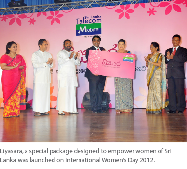As the National Mobile Service Provider, Sri Lanka Telecom Mobitel believes in the real prospect of value added services and synergies through selective collaborations and partnerships. Constantly striving to empower all government institutions to be conversant in technology, Mobitel partnered with the National Transport Commission to supply Mobile Enterprise Solutions with the latest technology driven mobile communications services.
Mobitel teams up with like-minded partners to serve existing markets as well as to enter new markets and in support of national causes. Such strategic partnerships have given access to many new service platforms and new market segments and in so doing produced mutual gains. Some such collaborations include: Immigration Department, Ministry of Telecommunications and Information Technology, Sri Lanka Post, Health Ministry, Airport and Aviation, Foreign Employment Bureau, Southern Province Road Passenger Transport Authority, National Child Protection Authority, National Transport Commission and Universities.
During the year the Company in collaboration with the Southern Province Road Passenger Transport Authority (SPRPTA) provided taxi services in Galle and its vicinity under the name "mTaxi". Mobitel also joined hands with the Ministry of Health's Epidemiology Unit to conduct a vaccination project, which is in trial at Gampaha. Recently Mobitel also opened a service centre at the Department of Immigration and Emigration in Colombo and was instrumental in piloting the "ETA project". ETA (Electronic Travel Authorisation) is a web based system for tourists to obtain visa prior to arrival in Sri Lanka. The system comprises of a software solution by Mobitel to facilitate the Department of Immigration and Emigration to receive and process visa applications for visit purposes and to notify the applicant regarding the outcome of the application.
Mobitel's strong product suite is further complemented by a formidable distribution network capable of extensive reach. The1,000+ outlets comprise our own branches, Singer Mega outlets, SLT offices, online dealers, post offices (for prepaid services), banks and Keells supermarkets (Payment Centres) and Arpico Super Centres.
The beginning of 2012 was a significant juncture for Mobitel where change was transpiring in every direction. The transformation was occurring at an unprecedented pace both on a global scale as well as at country level. This necessitated a revitalisation process, which was necessary to view this change from an optimistic angle and harness the opportunities that it presented. As a result a committed, determined effort under the theme "Change" was launched to achieve an organisational change across the board. The programme entailed the following objectives: a culture change towards adapting to constant change, nurturing and encouraging initiatives and innovation, instilling a sense of urgency, cost optimisation, improving process efficiencies across the board, enriching the workforce with knowledge and skills, and renewed customer focus. New strategies, new policies, new processes, new technologies and new ideas were put in place to transform Mobitel to achieve unparalleled growth and leadership in the ICT industry.
The 'Change' programme which was initiated in early 2012 started to show dramatic results towards the latter part of the year. Within the first few months, over 500 new initiatives of different scales were adopted. These were all based on suggestions made by the staff. Cost savings achieved through these collective efforts ran into several hundred millions.
Mobitel is endowed with a rich pool of talent that is passionately committed to providing the highest quality of service and value. Thus with the 'Change' campaign, employees displaying outstanding levels of commitment towards achieving the Company's objectives were duly recognised as "Change Leaders".
During the year, the HR department adopted a number of new initiatives making Mobitel an employer of choice. The Performance Management System was further strengthened, reinforcing a performance driven culture. An open door policy for staff was encouraged with clear channels of communication; where escalating issues to the highest level of authority was made simple. Added to this, periodic opinion surveys are also conducted where results are discussed and addressed. Mobitel believes in investing in human capital by enriching their knowledge and skills through proper training and development, which will ultimately lead the Company forward to meet the 'future now'.
As an employee centric organisation which focuses on providing enhanced opportunities for employees to develop their skills and knowledge, Mobitel introduced "Mobitel Talent Extravaganza", a talent search to bring out and recognise the various talents within the organisation. The Talent Extravaganza which was carried out in three phases, ended with the grand finale crowning winners of the Group and Solo categories for singing and dancing. Events of this nature, not only promote leadership, solidarity, finesse and unity amongst the Mobitel family but also motivate staff through recognition and appraisal of their talents, and encourage camaraderie among colleagues.
Mobitel considers Enterprise Risk Management as a core competency throughout the organisation. Mobitel has been committed to maintaining a risk management framework and to enhancing the organisation's ability to manage uncertainty by protecting assets and safeguarding shareholders' interests whilst ensuring compliance with applicable laws and regulations. The existing risk management practices were further strengthened during the year with a new organisational unit being formed directly under the purview of the Chief Executive Officer. A comprehensive programme was rolled out with the goal of creating a risk management culture across the organisation through awareness creation and training. A risk management representative was appointed to each division to facilitate the process, while all divisions were mandated to identify risks, including operational risks. They were also asked to evaluate and brainstorm controlling or mitigating procedures. An organisational-wide risk registry was created, with periodic updates to be escalated to the Audit Committee and the Board of Directors as necessary. In addition, all major projects and engagements had a separate risk review and evaluation procedure established for all major phases of the life cycle.
In its continuous mission to lead Sri Lanka's ICT transformation across the island, Mobitel opened its first regional contact centre at Sooriyawewa in Hambantota in early 2012. Mobitel's commitment towards the development of ICT in rural areas of Sri Lanka was further endorsed by the opening of a second regional contact centre in Mullaitivu - giving the area a well- deserved ICT boost. Mullaitivu is also the best location for a technologically advanced customer care contact centre that will cater exclusively to the Tamil-speaking segment of the population. Further complementing this commendable proposition of leading the ICT Transformation across the rural areas, Mobitel opened a de-centralised IT centre in Kegalle introducing technology to the region whilst creating a significant number of job opportunities. Expansion into the rural areas takes place in an ideal setting as these communities prepare to embrace upcoming opportunities in order to meet the future now.
One of the greatest challenges the world faces today is preserving our natural environment for future generations. Mobitel believes in protecting the environment and thus operates an ecologically friendly business. Mobitel has integrated the practices of a green business in all its operations. While fully adhering to the environmental regulations meted out by the Central Environment Authority, the Company believes in going over and beyond statutory requirements, and voluntarily engages in environmentally sustainable practices.
Mobitel promotes the concept of sharing towers with other operators. This will help minimise the impact caused to the environment by the erection of towers. In addition to this, Mobitel has adopted an aesthetically pleasing camouflage structure when constructing towers in the vicinity of world heritage sites, cities of archeological importance and wildlife sanctuaries.
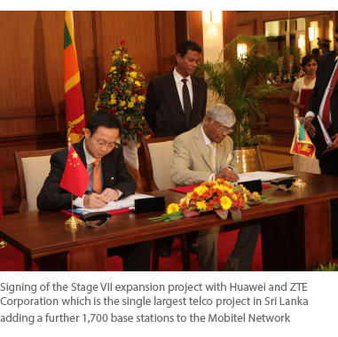As an environment friendly practice, sound-proof generators are used at all base station sites and core network locations in order to reduce noise pollution. Furthermore, Mobitel, in an effort to minimise the emission of greenhouse gasses, is reducing the number of generators used while focusing more on commercial power consumption in an efficient manner. In recent years, Mobitel has recycled and reused more than 1,200 batteries within the core power management system with the objective of reducing hazardous waste.
Mobitel was instrumental in carrying out numerous energy conservation projects with the use of energy efficient technology and cost reduction measures. Among the steps taken to reduce electrical consumption from the National Grid are: the deployment of highly energy efficient base stations; the modernisation of energy efficient radio frequency units with the help of the latest technology; adoption of dynamic power saving technology for all base stations during the low network traffic periods; deployment of green shelters for base stations which has vast benefits including lower power consumption; use of inverter type air conditioners which are highly efficient, cooling systems that would reduce the cost of power for the network; deployment of in-house developed energy efficient free cooling systems for indoor base stations; deployment of outdoor base stations which do not require air conditioning; installation of wind mills at communication towers to generate green power required for the operation of the site; diesel generator and battery hybrid system for off grid base stations; and the use of solar powered aviation lamp systems as a means of protection from aircrafts. Mobitel is thus forcusing on adopting energy efficient equipment and renewable power sources for base stations in order to create a network architecture with optimised energy consumption and a reduced carbon footprint.
Mobitel caring approch is extended not only to its customers, but to the entire nation. Many initiatives were undertaken in 2012 in a concerted effort to provide assistance to issues of national importance.
Mobitel extended its unwavering support to the National Child Protection Authority (NCPA) towards achieving its vision of creating a child friendly and protective environment for children. Initial involvement included promoting the NCPA's 24-hour hotline: 'Child Line' - 1929 while also working towards strengthening their call centre through training programmes as well as an infrastructure upgrade. Mobitel is also involved in several other initiatives such as fundraiser projects that will help develop the NCPA.
Mobitel embarked on an awareness and facilitation campaign together with the Ministry of Health to eradicate the growing epidemic of dengue. During the early part of the year, the dengue epidemic took a turn for the worse, making it a nationwide threat. The awareness creation campaign launched by Mobitel along with the Ministry of Health used SMS technology, while at branch level educational banners were displayed and leaflets distributed.
Playing a pivotal role in empowering the ICT sector in Sri Lanka, Mobitel was the Official Mobile Service Provider for the 'Deyata Kirula 2012' exhibition held at Oyamaduwa in Anuradhapura. This is the 4th year that Mobitel has extended its support towards the national exhibition, which has consistently upheld its objective of enlightening the public on national pride and the nation's development targets. The Company made use of this opportunity to showcase the endless possibilities in mobile technology through its latest products and services.
For the third consecutive year The Institution of Engineers of Sri Lanka honoured Mobitel with the "Excellence in Engineering Award" under the category, 'Infrastructure - Services Sector: Large'. It is a testament to Mobitel's drive to adopt and employ the latest technologies in the industry. This accolade is also representative of Mobitel's exceptional achievements encompassing effective capacity utilisation, superior planning and execution, unparalleled operational excellence, technological prowess, service, consistent quality, innovative strength and high standards in productivity achieved by following world-class best practices.
Mobitel also won two awards at the National Engineering and Technology Awards 2012 organised by the Institution of Engineers Sri Lanka for its official stall at the exhibition, winning Gold for 'Best Demonstration' and Silver for the 'Best Display of Engineering Services'.
2012 has been a year where Mobitel has unwaveringly delivered all the promises made in the past to all its key stakeholders. In its resolve for 2013, Mobitel aims to create more value to the customer, capturing and capitalising on opportunities available while weathering challenges that the Company may encounter. Propelled by the vision to "Lead Sri Lanka towards an Info-com and Knowledge Rich Society" and viewing the entire country as one Mobitel family, Mobitel will drive mobile ICT in the country, strengthen its technological leadership, strive for optimum asset utilisation and pursue a core strategy based on cost leadership. Growth in 3G and the introduction of 4G will strategically figure in all future value innovations of the Company, which will thereby leap into a new phase of growth with renewed purpose, courage and vigour. In the future, advanced world communications will without doubt occupy an essential place, and as the National Mobile Service Provider, Mobitel has assumed for itself a key role in leading Sri Lanka into that future. Now.

Year 2012 was overshadowed by many challenges in the competitive landscape, macro environment as well as constraints from other externalities. Yet these deterrents were unable to deny a remarkable performance by Mobitel, the mobile arm of the SLT Group. In an industry that is indicative of a voice market fast approaching saturation while the broadband market is yet to gain full momentum, Mobitel emerged a strong player achieving an impressive revenue growth of 13%. In absolute terms, the Company reached Rs.24.93 billion in revenue during year 2012 compared to Rs.22.08 billion in 2011, an increase of Rs.2.85 billion. This significant feat is ensuing from the corresponding increase of 14% in Mobitel's subscriber base despite the stepped up intensity in competition in the mobile telephony sector. The increase in subscribers was backed by the comprehensive network expansion drive completed towards mid 2012 with the objectives of attaining enhanced coverage, increased capacity and speed together with a special focus towards pursuing an extensive coverage expansion in the North and East geographies of Sri Lanka. Accordingly, Mobitel was able to extend its reach to the furthest corners of the island offering the best customer experience duly complemented by an array of innovative products and superior service which eventually triggered a significant growth in subscribers and revenues. 2012 experienced increasing industry supply arising from aggressive investments by all operators. Further, the industry also witnessed increased competition in the broadband arena stemming from relatively new entrants to the broadband market. However Mobitel was able to withstand the competitive pressures and report a healthy performance in all aspects of the business.
It has been a trying year with the Company's profitability challenged due to increased operational costs. Soaring fuel prices coupled with increased power and energy costs exerted excessive pressure on the profitable growth of the Company. Proactive and pragmatic measures undertaken to optimise cost, enhance revenue and increase productivity ensured that Mobitel was able to withstand the inflationary pressures to record a noteworthy growth in operational profitability. Accordingly Earnings before Interest, Tax, Depreciation and Amortisation (EBITDA) grew by 20% to Rs.8.25 billion in 2012 compared to Rs.6.86 billion in 2011 while Earnings before Interest and Tax (EBIT) increased by 17% to Rs.3.21 billion in 2012, compared to Rs.2.74 billion in 2011. The EBITDA margin grew by two percentage points from 31% in 2011 to 33% in 2012 which is a significant achievement considering the drawbacks the industry had to tackle in the wake of increasing expenditure. Thus a healthy EBITDA margin of 33% is a testimony to prudent cost management and operational efficacy of the organisation.
Macro developments in the first half of 2012 by way of a depreciating rupee affected the overall profitability of the entire industry. Mobitel too was not insulated from this occurrence - the magnitude of the exchange loss incurred in 2012 was a staggering Rs.1.25 billion. However, despite this massive setback, Mobitel successfully reversed the impact of the exchange loss towards the latter half of the year by reporting a healthy net profit of Rs.1.14 billion. A substantial increase in revenue duly complemented by the cost optimising initiatives and marginal appreciation of the rupee toward the latter months of 2012 proved fruitful, as Mobitel was able to withstand all deficiencies of a difficult year and achieve a commendable performance.
MANAGEMENT DISCUSSION & ANALYSIS : SLT PUBLICATIONS (PRIVATE) LIMITED
SLT Publications (Private) Limited. was originally formed to serve the TRC stipulation of providing directories to SLT customers. Over the years the Company has grown and crossed the boundary from being a print directory publisher to producing innovative media products to disseminate directory information via an array of media devices that includes the Directory CD, Call Centre Services, Web Portal, e-Directory and Mobi App for people to make prompt decisions anywhere in real time for national productivity.
These efforts have received much recognition with the most recent award has being the eSwabhimani Award from Digital Media for high tech Mobi App for the growing mobile smart phone community. This user friendly mobile application enables users to access directory information in a fast and easy way, at any time, anywhere, from any network.
This award yet again recognises the innovation of SLT RAINBOW PAGES in providing information to the nation.
SLT RAINBOW PAGES – the National Business Directory has become the most comprehensive Business Directory in our country with Government recognition as being the sole information provider to all government institutions and organisations for procurement purposes. More and more private sector organisations and NGOs, also use the SLT Directory for all their procument needs.
SLT RAINBOW PAGES continuously updates the database to provide socially valuable and useful information to the public. All the leading mobile networks utilise the RAINBOW PAGES database to serve the information needs of their clients. This has created a big revolution in enjoying information on the go and is fast gaining popularity all across the country. We also team up with national organisations such as the Export Development Board, the Ministry of Indigenous Medicine, the Ministry of Tourism and the Gem and Jewellery Authority to promote their industries and collaborate with leading professional associations such as the Institute of Personel Management, Chartered Institute of Accountants, SLIM, etc., to produce directories for their individualised needs. By linking professionals with one another and the rest of the country, SLT Publications assists national development.
The directory features an annual theme for the cover page. This is dedicated to a product, service category or industry and articles on industries that need to be promoted are published. Last year's Ayurvedha theme was well received and indigenous medicine of our country experienced a resurgence in interest through our efforts. The directory theme for 2013/14 is the Gem and Jewellery industry.
Apart from the traditional print classified directories, RAINBOW PAGES has launched industry specific directories to cater to niche markets such as tourism, weddings etc., where there is growing demand.
Our commitment to provide information to the nation and the recognition received spur us forward to continue empowering the nation with ease of access to directory information.